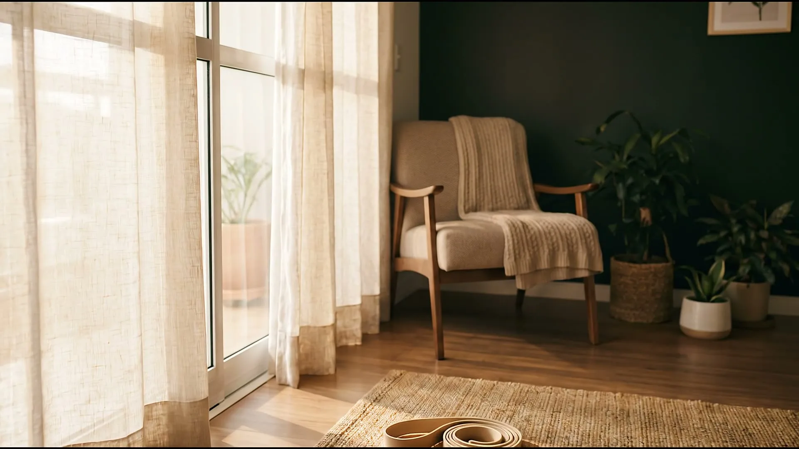
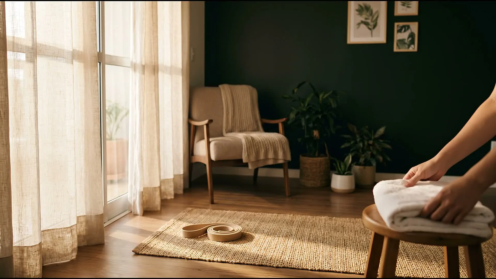
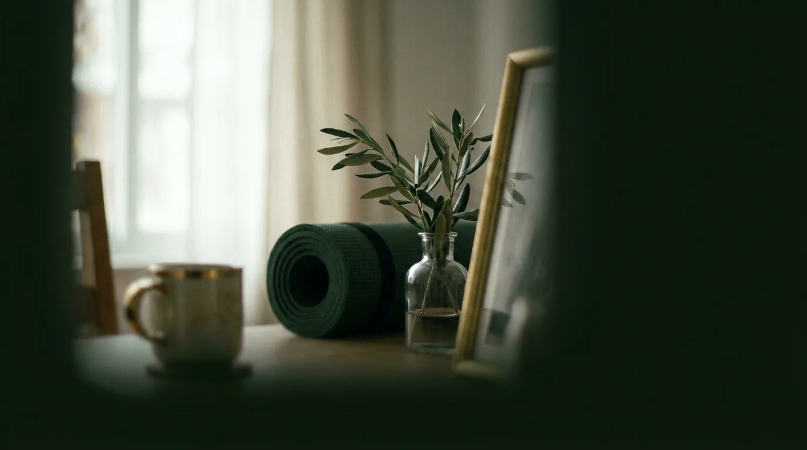

Alívio de dores
Técnicas terapêuticas e exercícios podem ajudar a reduzir tensão e desconforto, conforme a necessidade de cada pessoa.
FISIOTERAPIA DOMICILIAR · BRASÍLIA
Fisioterapia em casa, com atenção ao seu movimento e à sua rotina.
Um plano de cuidado pensado para o que seu corpo precisa hoje.
Agende uma conversa com Larissa.
Solicitar agendamentoSou Larissa Mendes, fisioterapeuta. Levo o atendimento até você em Brasília para que o cuidado aconteça no ambiente onde sua rotina realmente acontece.
Cada encontro começa com escuta e atenção aos seus objetivos de movimento.
Vamos conversar
O cuidado é definido após avaliação e pode trabalhar diferentes aspectos da saúde e do movimento.
Técnicas terapêuticas e exercícios podem ajudar a reduzir tensão e desconforto, conforme a necessidade de cada pessoa.
Alongamentos e mobilizações buscam ampliar movimentos importantes para as atividades do dia a dia.
Exercícios específicos ajudam a trabalhar força, equilíbrio muscular e suporte às articulações.
O acompanhamento pode apoiar a reabilitação após lesões ou cirurgias e a retomada gradual de atividades.
A avaliação e os exercícios podem contribuir para o controle dos movimentos e a consciência corporal.
Movimentar-se com orientação pode favorecer autonomia, confiança e participação nas tarefas cotidianas.


Preencha os dados e confira a mensagem no WhatsApp antes de enviar para Larissa.